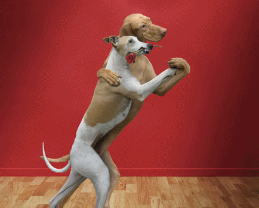
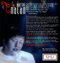
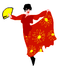
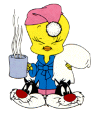
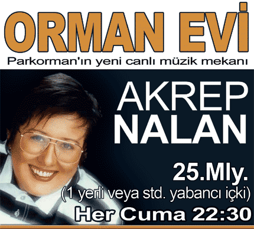
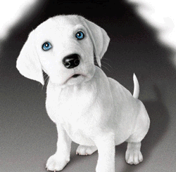
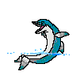

Jöntürk'ün çıkardığı Şaman isimli albümde Jöntürk'ün
Sun Avucundaki Karanlığı Bana
isimli hip-hop çalışmasına eşlik ettim Detaylı bilgi aşağıdaki adreste
BİR YAZ DAHA GEÇTİ... BODRUM TATİLİMİ TAMAMLAYIP, İSTANBUL'A DÖNDÜM...
SEVGİLİ DOSTLARIM; BU SEZON SAHNE PERFORMANSIMI ŞİŞLİ ELİT RESIDANCE DA SERGİLEYECEĞİM.
14 ARALIK 2006 PERŞEMBE AKŞAMINDAN İTİBAREN HER PERŞEMBE SİZLERLEYİM...
SAHNE SAATİM 23.00 - 01.00
ŞAHANE YEMEKLER, HOŞ BİR ATMOSFER , GÜVEN VE HUZUR DOLU BİR EĞLENCEYİ PAYLAŞMAK, BİRLİKTE
ŞARKILAR
SÖYLEMEK İÇİN BEKLİYORUM.
ADRES: ELİT RESTAURANT & BAR TEL: 0212 2969644
DR. İSMET ÖZTÜRK SOKAK 0212 2918262
NO: 17
ŞİŞLİ - İSTANBUL

AKREP NALAN, NECO VE FEDON coco à gogo’da...
İstanbul’un tek canlı müzikli VIP restaurantı Coco à gogo, bu kış müşterilerine
“kaliteli yemek”, “kaliteli müzik”
sloganı ile hizmet ediyor... Coco à gogo, canlı müzik programında; her Perşembe günü AKREP NALAN,
her Cumartesi NECO, her Çarşamba ve Cuma FEDON ile müzikseverlere ister yemekte ister barda keyifli
dakikalar geçirtecek.
Keyifli müziğin yanısıra lezzetli yemek ve dans bu kış sosyetenin Coco a’gogo’yu tercih etme sebebi
olarak gözüküyor. Tanınmış gurme danışmanı Patrizia Ünder'in hazırladığı yepyeni dünya lezzetleri
ile dolu menü, Bodrum Marina İtalyan Restaurant'tan gelen şef Halil Varolsun tarafından
hazırlanıyor.
www.coco-a-gogo.com
REZERVASYON 0212 324 COCO (2626)
ŞARKI SÖYLEMEYE DEVAM EDİYORUZ.
BU KEZ 8 KASIM 2005 DEN İTİBAREN SALI GECELERİ MAÇKADA SHU BARDAYIZ.
BİRLİKTE SÖYLEMEK İÇİN...

REZERVASYON: 0212 3430282
EYTAN CADDESİ NO: 21 TEŞVİKİYE
DOSTLARIM YENİ BİR TV DİZİSİNE BAŞLADIM. KANAL D DE PERŞEMBE AKŞAMLARI YAYINLANAN "HAYAT
BİLGİSİ" İSİMLİ DİZİDE BEDEN EĞİTİMİ ÖĞRETMENİ FİDANI OYNUYORUM.
DİZİ HAKKINDA DETAYLI BİLGİ EDİNMENİZ İÇİN;
www.hayatbilgisi.net
ADRESİNİ ZİYARET EDEBİLİRSİNİZ.

SEVGİLİ DOSTLARIM, BU KEZ SİZLERE ACI BİR HABERİM VAR. 8 NİSAN 2003 DE BİRİCİK BABACIĞIMI KAYBETTİM.
KEDERİM SONSUZ... SİZLERLE PAYLAŞMAK İSTEDİM. NE DİYELİM DOSTLAR SAĞ OLSUN...

UZUN ZAMANDIR GÜNCELLEME YAPAMIYORDUM. BİLDİĞİNİZ GİBİ HAYAT BİLGİSİ YENİ SEZONDA SHOW TV DE DEVAM
EDİYOR. BU KEZ CUMA AKŞAMLARI KEYİFLE İZLEYEBİLİRSİNİZ. ÖĞRETMENLİĞE DEVAM EDİYORUZ İŞTE...

ARKADAŞLAR 12 MART 2004 TARİHİNDEN İTİBAREN HER CUMA PARKORMAN"DAYIM.. DETAYLI BİLGİLER
YUKARIDADIR.. BEKLERİM EFENDİM:-))
Rezervasyon: 0212 3282000
HABERLERE DEVAM 31 MART 2004 TARİHİNDEN İTİBAREN HER ÇARŞAMBA
GOLA DA ŞARKILARIMI SÖYLEMEYE DEVAM EDİYORUM.
ADRES: ZİNCİRLİKUYU CADD. NO: 141 BEŞİKTAŞ
Rezervasyon: 0212 2747184
Sahne saati: 23,00
Fiatlar: Yemekli limitsiz yerli içki 60.000.000.-- TL

YİNE İHMAL ETTİK GÜNCELLEMEYİ:-) DOSTLARIM GÖRÜŞMEYELİ HAYAT BİLGİSİ DİZİSİNDEKİ FİDAN ÖĞRETMEN
KARAKTERİ TAYİN GÖRDÜ... YANİ YENİ DÖNEMDE YOKUM...
TRT 1 DE YAYINLANAN AŞK MAHKUMU İSİMLİ DİZİYE TRANSFER OLDUM. ZEROŞ KARAKTERİ İLE ERMENİ BİR
MEYHANECİYİ OYNAMAYA ÇALIŞIYORUM.
9 BÖLÜM YAYINLANDI VE AŞK MAHKUMU YAYINDAN KALDIRILDI:-( REYTİNG CANAVARININ ACIMASIZ DİŞLERİNDE
ÖĞÜTÜLDÜK ANLAYACAĞINIZ...
SAHNELERE DÖNÜYORUM... 11 MART 2005 CUMA AKŞAMINDAN İTİBAREN; HER CUMA HOPAOPA DA SAHNE ALIYORUM.
BİLGİ İÇİN 0212 234 82 00 YA DA 0212 234 82 01 TELEFON NUMARALARINI ARAYABİLİRSİNİZ.
ADRES: ERGENEKON CADD. 73/B SÜTİŞ İN YANI PANGALTI

17 MART 2005 PERŞEMBE AKŞAMINDAN İTİBAREN; HER PERŞEMBE BUZ CAFE DE SAHNE PERFORMANSIMA DEVAM
EDİYORUM...
BİLGİ İÇİN: 0212 2910066 - 65 TELEFON NUMARALARINI ARAYABİLİRSİNİZ
ADRES: APDİ İPEKÇİ CADDESİ 42/1 TEŞVİKİYE
HOPAOPA DAKİ ÇALIŞMALARIM BİTTİ.. PERŞEMBE GÜNLERİ BUZ BARDA ŞARKILARIMIZI SÖYLEMEYE DEVAM EDİYORUM.
|